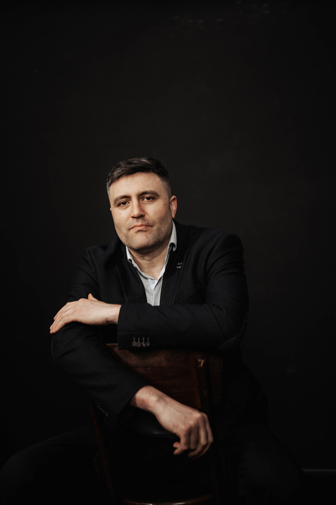
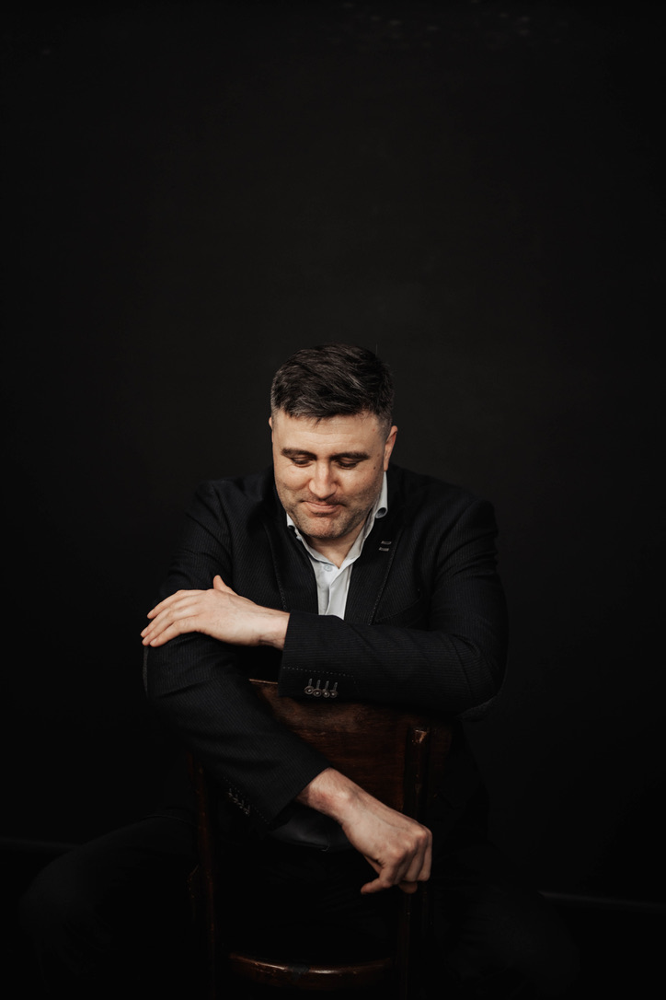

Как помочь подростку подготовиться к будущему?
Привет, меня зовут Геннадий Николаев.
Я помогаю семье максимально эффективно пройти путь от школы к профессии. Цель одна – выжать максимум из потенциала подростка, при этом чтобы попутно он научился кайфовать от процесса саморазвития, а родители были поддержкой и опорой, а не надзирателями.
Около десяти лет я сопровождаю подростков — от средней школы до выпуска из университета и первых профессиональных шагов. Ниже я хочу поделиться своим опытом и показать, чем могу быть полезен.
Обычно ко мне приходят, когда подросток в 9–10 классе: впереди ОГЭ, ЕГЭ, поступление.
При этом, учёбу пытаются вытянуть количеством — больше часов, больше репетиторов, — а отдача не растёт.
Итак, что мы делаем
Мы собираем вокруг подростка систему, в которой он эффективно учится и развивается как самостоятельный человек. Работа идёт по трём линиям.
Учёба
Дело обычно не в количестве занятий, а в том, как выстроен процесс: при правильном подходе тот же материал осваивается заметно быстрее и удерживается к экзамену.
Тут мы выстраиваем ритм обучения, приучаем подростка к усидчивости и к тому, как работать с информацией. Я подбираю специалистов, которые учат его учиться. Приоритизируем предметы, в которые нужно "топить", а остальные держим на необходимом уровне.
Профессиональные пробы
Эта часть работы часто более важная: без неё учёба так и держится на внешнем контроле. Тут не даём готовых ответов вроде «иди в программисты», а помогаем подростку самому разобраться, что ему интересно и куда двигаться. Пробуем разные направления на практике, смотрим, что подходит, и доводим до конца хотя бы одно своё дело, за которое он взялся сам. Задача — не выбрать профессию раз и навсегда, а научиться пробовать и делать выбор осознанно. На выходе у подростка появляются собственные цели и первый реальный опыт доведённого до конца дела.
Эту линию ведёт тьютор — специалист по формированию самостоятельности у подростка.
Родитель
В этом возрасте многое упирается в то, как ведёт себя взрослый. Когда родитель всё контролирует и тревожится, подросток это считывает и хуже слышит себя. Поэтому третья линия работы: помочь родителю перейти из роли контролёра в роль советника и опоры. Разбираем реальные ситуации, даём рабочие инструменты: где нужно и можно требовать, где нужно выстраивать и соблюдать границы, как договариваться и выдерживать договоренности с ребенком; какие решения оставить за подростком. И работаем с самой тревогой.
На выходе у родителя понятная роль в системе и меньше стычек по учёбе и быту.
Что делаю я
Я хорошо разбираюсь в том, как формируется мотивация, умею планировать и организовывать. Через эти навыки я и выстраиваю систему: под каждую линию мы подбираем специалистов и выстраиваем их работу так, чтобы она работала в копилку мотивации подростка.
За учёбу отвечают специалисты по техникам работы с информацией и предметники — а рутину подростка складываем так, чтобы ему было комфортно учиться. За профессиональные пробы — тьютор и сами пробы. Для родителя — небольшие мастер-классы, где понемногу учимся эффективно общаться с подростком.
Обычно на все уходит четыре-шесть месяцев. Моя задача за это время — собрать команду, запустить её работу и выйти.
Кто ведёт систему после меня
После моего выхода систему держат специалисты, которых я подобрал и ввёл в работу. Обычно это три роли.
Первый ведёт учёбу: успеваемость по нужным предметам, связь со школой, подготовку.
Второй занимается самостоятельностью: работает с подростком над его целями и пробами.
Третий поддерживает родителя: помогает выстроить роль и разбирать сложные ситуации.
Важно понимать: это не трое на постоянку. Кого-то подключаем на месяц, кого-то на пару встреч, а кого-то и на полгода-год. И все они нужны ровно до тех пор, пока подросток не станет самостоятельным и не перестанет в них нуждаться.
Как отслеживаем результат
Работа не идёт вслепую. В начале снимаем срез по всем трём линиям: где подросток по учёбе, по самостоятельности, что с ролью родителя. Дальше сверяемся примерно каждые два месяца: что сдвинулось, что буксует, что поправить в подходе. К концу проходим по тем же точкам и смотрим, что изменилось.
По учёбе: успеваемость по нужным предметам выросла, подросток сам организует свою учёбу.
По самостоятельности: появились собственные цели, есть первое доведённое до конца своё дело.
По родителю: понятная роль в системе, меньше стычек дома.
Это и есть точка моего выхода: по всем трём линиям есть результат, система работает автономно. А родитель эффективно взаимодействует с ребенком.
План развития
Внутри проекта собираем план, по которому семья дальше живёт сама. Строится он от общего к конкретному: сначала образ будущего — куда подросток хочет прийти через 5-10 лет, затем цель на ближайшие пару лет — направление, поступление. Потом ближайшие шаги на несколько месяцев, полгода, год. Так дальняя цель не висит в воздухе, а разложена на понятные действия.
Отдельно даём инструменты, чтобы пересматривать и перестраивать план: подросток растёт, интересы уточняются, и план меняется вместе с ним, а не устаревает.
Деньги
Порядок такой. Моя работа — 100 000 рублей в месяц на время проекта. Сверх этого закладываем 50–100 тысяч в месяц на специалистов, пока собираем и настраиваем систему. После моего выхода система обходится примерно в 80–100 тысяч в месяц напрямую специалистам, уже без меня.

Если есть вопросы — напишите, начнем обсуждение. Можем связаться минут на 30 и познакомиться.
Перед стартом в любом случае обсудим вашу ситуацию – работа начинается с разговора, а не с оплаты.